A parametric model that we choose to fit to data is chosen from a family of functions. Then, we use optimization to find the best model from that family. To find the best model we either minimize empirical loss or maximize the likelihood. We also established, that when \(y \sim N(f(x\mid \beta),\sigma^2)\) then meas squared error loss and negative log-likelihood are the same function. \[
\E{y | x} = f(\beta^Tx)
\]
For a regression model, an empirical loss measures a distance between fitted values and measurements and the goal is to minimize it. A typical choice of loss function for regression is \[
L (y,\hat y) = \dfrac{1}{n}\sum_{i=1}^n |y_i - f(\beta^Tx_i)|^p
\] When \(p=1\) we have MAE (mean absolute error), \(p=2\) we have MSE (mean squared error).
Finding an appropriate family of functions is a major problem and is called model selection problem. For example, the choice of input variable to be included in the model is part of the model choice process. In practice we can find several models for the same data set that perform nearly identically. To summarize, the properties of a good model are
Good model is not the one that fits data very well
By including enough parameters we can make fit as close as we need
Can have perfect fit when number of observations = number of parameters
The goal not only to get a good fit but also to reduce complexity
Model selection: do not include parameters we do not need
Usually select a model from a relevant class
When we select a model for our analysis, we need to keep the following goals in mind - When we have many predictors (with many possible interactions), it can be difficult to find a good model. - Which input variables do we include? - Which interactions do we include? - Model selection tries to “simplify” this task.
The model selection task is sometimes one of the most consuming parts of the data analysis. Unfortunately, there is no single rule to find the best model. One way to think about the model choice problem as yet another optimization problem, with the goal to find best family of functions that describe the data. With a small number of predictors we can do brute force (check all possible models). For example, with \(p\) predictors there are \(2^p\) possible models with no interactions. Thus, the number of potential family functions is huge even for modest values of \(p\). One cannot consider all transformations and interactions.
16.1 Out of Sample Performance
Our goal is to build a model that predicts well for out-of-sample data, e.g. the data that was not used for training. Eventually, we are interested in using our models for prediction and thus, the out of sample performance is the most important metric and should be used to choose the final model. In-sample performance is of little interest when predictive model need to be chosen, as one of the winners of Netflix prize put it, “It’s like predicting how much someone will like a movie, having them watch it and tell you how much they really liked it”. The out-of-sample performance is the final judge of the quality of our model. The goal is to use data to find a pattern that we can exploit. The pattern will be “statistical" in its nature. To uncover the pattern we start with a training dataset, denoted by \[
D = (y_i,x_i)_{i=1}^n
\] and to test the validity of our mode we use out-of-sample testing dataset \[
D^* = (y_j^*, x_j^*)_{j=1}^m,
\] where \(x_i\) is a set of \(p\) predictors ans \(y_i\) is response variable.
A good predictor will “generalize” well and provide low MSE out-of-sample. These are a number of methods/objective functions that we will use to find, \(\hat f\). In a parameter-based style we will find a black box. There are a number of ways to build our black box model. Our goal is to find the map \(f\) that approximates the process that generated the data. For example data could be representing some physical observations and our goal is recover the “laws of nature" that led to those observations. One of the pitfalls is to find a map \(f\) that does not generalize. Generalization means that our model actually did learn the”laws of nature" and not just identified patterns presented in training. The lack of generalization of the model is called over-fitting. It can be demonstrated in one dimension by remembering the fact from calculus that any set of \(n\) points can be approximated by a polynomial of degree \(n\), e.g we can alway draw a line that connects two points. Thus, in one dimension we can always find a function with zero empirical risk. However, such a function is unlikely to generalize to the observations that were not in our training data. In other words, the empirical risk measure for \(D^*\) is likely to be very high. Let us illustrate that in-sample fit can be deceiving.
Example 16.1 (Hard Function) Example: Say we want to approximate the following function \[
f(x) = \dfrac{1}{1+25x^2}.
\] This function is simply a ratio of two polynomial functions and we will try to build a liner model to reconstruct this function
x =seq(-2,2,by=0.01)y =1/(1+25*x^2)# Approximate with polynomial of degree 1 and 2m1 =lm(y~x)m2 =lm(y~poly(x,2))# Approximate with polynomial of degree 20 and 5m20 =lm(y~poly(x,20))m5 =lm(y~poly(x,5))x =seq(-3,3,by=0.01)y =1/(1+25*x^2)plot(x,y,type='l',col='black',lwd=2)lines(x,predict(m1,list(x=x)),lwd=2, col=1)lines(x,predict(m2,poly(x,2)),lwd=2, col=2)lines(x,predict(m5,poly(x,5)),lwd=2, col=3)lines(x,predict(m20,poly(x,20)),lwd=2, col=4)legend("topright", legend=c("f(x)","m1","m2","m5","m20"), col=c("black",1:4), lty=1, cex=0.8, bty='n')
Figure 16.1: Runge-Kutta function
Figure fig-rungekutta shows the function itself (black line) on the interval \([-3,3]\). We used observations of \(x\) from the interval \([-2,2]\) to train the data (solid line) and from \([-3,-2) \cup (2,3]\) (dotted line) to test the model and measure the out-of-sample performance. We tried four different linear functions to capture the relations. We see that linear model \(\hat y = \beta_0 + \beta_1 x\) is not a good model. However, as we increas the degree of the polynomial to 20, the resulting model \(\hat y = \beta_0 + \beta_1x + \beta_2 x^2 +\ldots+\beta_{20}x^{20}\) does fit the training data set quite well, but does very poor job on the test data set. Thus, while in-sample performance is good, the out-of sample performance is unsatisfactory. We should not use the degree 20 polynomial function as a predictive model. In practice in-sample out-of-simple loss or classification rates provide us with a metric for providing horse race between different predictors. It is worth mentioning here there should be a penalty for overly complex rules which fits extremely well in sample but perform poorly on out-of-sample data. As Einstein famous said “model should be simple, but not simpler.”
To a Bayesian, the solution to these decision problems are rather obvious: compute posterior distributions, and then make decisions by maximizing expected utility, where the posterior distribution is used to calculate the expectations. Classical solutions to these problems are different, and use repeated sampling ideas, whereby the performance of a decision rule is judged on its performance if the same decision problem were repeated infinitely. Thus, the decisions are made based on their population properties. One of the main uses of statistical decision theory is to compare different estimators or hypothesis testing procedures. This theory generates many important findings, most notably that many of the common classical estimators are “bad”,in some sense, and that Bayesian estimators are always “good”.
These results have major implications for empirical work and practical applications, as they provide a guide for forecasting.
16.2 Statistical Decisions and Risk
The statistical decision making problem can be posed as follows. A decision maker (you) has to chose from a set of decisions or acts. The consequences of these decisions depend on an unknown state of the world. Let \(d\in\mathcal{D}\) denote the decision and \(\theta\in\Theta\) the state of the world. As an example, think of \(\theta\) as the unknown parameter and the decision as choosing a parameter estimation or hypothesis testing procedure. To provide information about the parameter, the decision maker obtains a sample \(y\in\mathcal{Y}\) that is generated from the likelihood function \(p\left(y|\theta\right)\). The resulting decision depends on the observed data, is denoted as \(d\left( y\right)\), and is commonly called the decision rule.
To make the decision, the decision maker uses a “loss” function as a quantitative metric to assesses the consequences or performance of different decisions. For each state of the world \(\theta\), and decision \(d\), \(L\left( \theta,d\right)\) quantifies the “loss” made by choosing \(d\) when the state of the world is \(\theta.\) Common loss functions include a quadratic loss, \(L(\theta,d)=(\theta-d)^{2},\) an absolute loss, \(L(\theta,d)=|\theta-d|\), and a \(0-1\) loss, \[
L(\theta,d)=L_{0}1_{\left[ \theta\in\Theta_{0}\right] }+L_{1}1_{\left[ \theta\in\Theta_{1}\right] }.
\] For Bayesians, the utility function provides a natural loss function. Historically, decision theory was developed by classical statisticians, thus the development in terms of “objective” loss functions instead of “subjective” utility.
Classical decision theory takes a frequentist approach, treating parameters as “fixed but unknown” and evaluating decisions based on their population properties. Intuitively, this thought experiment entails drawing a dataset \(y\) of given length and applying the same decision rule in a large number of repeated trials and averaging the resulting loss across those hypothetical samples. Formally, the classical risk function is defined as \[
R(\theta,d)=\int_{\mathcal{Y}}L\left[ \theta,d(y)\right] p(y|\theta )dy=\mathbb{E}\left[ L\left[ \theta,d(y)\right] |\theta\right] .
\] Since the risk function integrates over the data, it does not depend on a given observed sample and is therefore an ex-ante or a-priori metric. In the case of quadratic loss, the risk function is the mean-squared error (MSE) and is \[\begin{align*}
R(\theta,d) & =\int_{\mathcal{Y}}\left[ \theta-d\left( y\right) \right]
^{2}p(y|\theta)dy\\
& =\mathbb{E}\left[ \left( d\left( y\right) -E\left[ d\left( y\right)
|\theta\right] \right) ^{2}|\theta\right] +\mathbb{E}\left[ \left(
E\left[ d\left( y\right) |\theta\right] -\theta\right) ^{2}|\theta\right]
\\
& =Var\left( d\left( y\right) |\theta\right) +\left[ bias\left(
d\left( y\right) -\theta\right) \right] ^{2}%
\end{align*}\] which can be interpreted as the bias of the decision/estimator plus the variance of the decision/estimator. Common frequentist estimators choose unbiased estimators so that the bias term is zero, which in most settings leads to unique estimators.
The goal of the decision maker is to minimize risk. Unfortunately, rarely is there a decision that minimizes risk uniformly for all parameter values. To see this, consider a simple example of \(y\sim N\left( \theta,1\right)\), a quadratic loss, and two decision rules, \(d_{1}\left( y\right) =0\) or \(d_{2}\left( y\right) =y\). Then, \(R\left( \theta,d_{1}\right) =\theta^{2}\) and \(R\left( \theta,d_{2}\right) =1\). If \(\left\vert \theta\right\vert <1\), then \(R\left( \theta,d_{1}\right) <R\left( \theta,d_{2}\right)\), with the ordering reversed for \(\left\vert \theta\right\vert >1\). Thus, neither rule uniformly dominates the other.
One way to deal with the lack of uniform domination is to use the minimax principle: first maximize risk as function of \(\theta\), \[
\theta^{\ast}=\underset{\theta\in\Theta}{\arg\max}R(\theta,d)\text{,}%
\] and then minimize the resulting risk by choosing a decision: \[
d_{m}^{\ast}=\underset{d\in\mathcal{D}}{\arg\min}\left[ R(\theta^{\ast },d)\right] \text{.}%
\] The resulting decision is known as a minimax decision rule. The motivation for minimax is game theory, with the idea that the statistician chooses the best decision rule against the other player, mother nature, who chooses the worst parameter.
The Bayesian approach treats parameters as random and specifies both a likelihood and prior distribution, denoted here by \(\pi\left( \theta\right)\). The Bayesian decision maker recognizes that both the data and parameters are random, and accounts for both sources of uncertainty when calculating risk. The Bayes risk is defined as \[\begin{align*}
r(\pi,d) & =\int_{\mathcal{\Theta}}\int_{\mathcal{Y}}L\left[ \theta ,d(y)\right] p(y|\theta)\pi\left( \theta\right) dyd\theta\\
& =\int_{\mathcal{\Theta}}R(\theta,d)\pi\left( \theta\right) d\theta =\mathbb{E}_{\pi}\left[ R(\theta,d)\right] ,
\end{align*}\] and thus the Bayes risk is an average of the classical risk, with the expectation taken under the prior distribution. The Bayes decision rule minimizes expected risk: \[
d_{\pi}^{\ast}=\underset{d\in\mathcal{D}}{\arg\min}\text{ }r(\pi,d)\text{.}%
\] The classical risk of a Bayes decision rule is defined as \(R\left(
\theta,d_{\pi}^{\ast}\right)\), where \(d_{\pi}^{\ast}\) does not depend on \(\theta\) or \(y\). Minimizing expected risk is consistent with maximizing posterior expected utility or, in this case, minimizing expected loss. Expected posterior risk is \[
r(\pi,d)=\int_{\mathcal{Y}}\left[ \int_{\mathcal{\Theta}}L\left[
\theta,d(y)\right] p(y|\theta)\pi\left( \theta\right) d\theta\right] dy,
\] where the term in the brackets is posterior expected loss. Minimizing posterior expected loss for every \(y\in\mathcal{Y},\) is clearly equivalent to minimizing posterior expected risk, provided it is possibility to interchange the order of integration.
The previous definitions did not explicitly state that the prior distribution was proper, that is, that \(\int_{\mathcal{\Theta}}\pi\left( \theta\right)d\theta=1\). In some applications and for some parameters, researchers may use priors that do not integrate, \(\int_{\Theta}\pi\left( \theta\right)d\theta=\infty\), commonly called improper priors. A generalized Bayes rule is one that minimizes \(r(\pi,d),\) where \(\pi\) is not necessarily a distribution, if such a rule exists. If \(r(\pi,d)<\infty\), then the mechanics of this rule is clear, although its meaning is less clear.
16.3 Bias-Variance Trade-off
Example 16.2 (Stein’s Paradox) Stein’s paradox, as explained Efron and Morris (1977), is a phenomenon in statistics that challenges our intuitive understanding of estimation. The paradox arises when trying to estimate the mean of a multivariate normal distribution. Traditionally, the best guess about the future is usually obtained by computing the average of past events. However, Charles Stein showed that there are circumstances where there are estimators better than the arithmetic average. This is what’s known as Stein’s paradox.
In 1961, James and Stein exhibited an estimator of the mean of a multivariate normal distribution that has uniformly lower mean squared error than the sample mean. This estimator is reviewed briefly in an empirical Bayes context. Stein’s rule and its generalizations are then applied to predict baseball averages, to estimate toxomosis prevalence rates, and to estimate the exact size of Pearson’s chi-square test with results from a computer simulation.
In each of these examples, the mean square error of these rules is less than half that of the sample mean. This result is paradoxical because it contradicts the elementary law of statistical theory. The philosophical implications of Stein’s paradox are also significant. It has influenced the development of shrinkage estimators and has connections to Bayesianism and model selection criteria.
We reproduce the baseball bartting average example from Efron and Morris (1977). The data is available in the R package Lahman. We will use the data from 2016 season.
library(Lahman)
Suppose that we have \(n\) independent observations \(y_{1},\ldots,y_{n}\) from a \(N\left( \theta,\sigma^{2}\right)\) distribution. The maximum likelihood estimator is \(\widehat{\theta}=\bar{y}\), the sample mean. The Bayes estimator is the posterior mean, \(\widehat{\theta}=\mathbb{E}\left[ \theta\mid y\right] =\frac{\sigma^{2}}{\sigma^{2}+n}% \bar{y}\). The Bayes estimator is a shrinkage estimator, it shrinks the MLE towards the prior mean. The amount of shrinkage is determined by the ratio of the variance of the prior and the variance of the likelihood. The Bayes estimator is also a function of the MLE, \(\widehat{\theta}=\frac{\sigma^{2}}{\sigma^{2}+n}\bar{y}+\frac{n}{\sigma^{2}+n}\widehat{\theta}\). This is a general property of Bayes estimators, they are functions of the MLE. This is a consequence of the fact that the posterior distribution is a function of the likelihood and the prior. The Bayes estimator is a function of the MLE, \(\widehat{\theta}=\frac{\sigma^{2}}{\sigma^{2}+n}\bar{y}+\frac{n}{\sigma^{2}+n}\widehat{\theta}\). This is a general property of Bayes estimators, they are functions of the MLE. This is a consequence of the fact that the posterior distribution is a function of the likelihood and the prior.
For any predictive model we seek to achieve best possible results, i.e. smallest MSE or misclassification rate. However, a model performance can be different as data used in one training/validation split may produce results dissimilar to another random split. In addition, a model that performed well on the test set may not produce good results given additional data. Sometimes we observe a situation, when a small change in the data leads to large change in the final estimated model, e.g. parameters of the model. These results exemplify the bias/variance tradeoff, where increasing model bias produces large variance in the final results. Similarly, low bias results in low variance, but can also produce an oversimplification of the final model. While Bias/variance concept is depicted below.
Figure 16.2: Bias-variance trade-off
:::{#exm-bias-variance} ## Bias-variance We demonstrate bias-variance concept using Boston housing example. We fit a model \(\mathrm{medv} = f(\mathrm{lstat})\). We use polynomial functions to approximate this relation. We fitted twelve polynomial functions with degree \(1,\ldots,12\) ten time. Each time we randomly selected 20% of sample for testing and the rest for training. We estimated in-of-sample performance (bias) and out-of-sample performance by calculating MSE on training and testing sets correspondingly. For each polynomial \(f\) we averaged MSE from each of the ten models.
Figure fig-boston-bias-variance shows bias and variance for our twelve different models. As expected, bias increases while variance increases as model complexity grows. On the other hand out-of-sample MSE is a U-shaped curve. The optimal model is the one that has smallest out-of-sample MSE. In our case it is polynomial of degree 5!
(a) Metrics for twelve polynomial functions fitted into Boston housing data set. As model complexity (degree of the polynomial function) increases, model variance increase and bias decreases. Out-of-sample MSE is smallest for 5th degree polynomial function, which is the optimal model in terms of bias-variance trade-off.
(b) Optimal complexity model, which is 5th degree polynomial used to predict observations from testing data set. Model predictions (red line) are compared to actual observed values of medv variable (dots)
Figure 16.3: Metrics for 12 models
Let’s take another, a more formal, look at bias-variance trade-off for a linear regression problem. We are interested in the decomposition of the error \(\E{(y-\hat y)^2}\) as a function of bias \(\E{y-\hat y}\) and variance \(\Var{\hat y}\).
Here \(\hat y = \hat f_{\beta}(x)\) prediction from the model, and \(y = f(x) + \epsilon\) is the true value, which is measured with noise \(\Var{\epsilon} = \sigma^2\), \(f(x)\) is the true unknown function. The expectation above measures squared error of our model on a random sample \(x\). \[
\begin{aligned}
\E{(y - \hat{y})^2}
& = \E{y^2 + \hat{y}^2 - 2 y\hat{y}} \\
& = \E{y^2} + \E{\hat{y}^2} - \E{2y\hat{y}} \\
& = \Var{y} + \E{y}^2 + \Var{\hat{y}} + \E{\hat{y}}^2 - 2f\E{\hat{y}} \\
& = \Var{y} + \Var{\hat{y}} + (f^2 - 2f\E{\hat{y}} + \E{\hat{y}}^2) \\
& = \Var{y} + \Var{\hat{y}} + (f - \E{\hat{y}})^2 \\
& = \sigma^2 + \Var{\hat{y}} + \mathrm{Bias}(\hat{y})^2\end{aligned}
\] Here we used the following identity: \(\Var{X} = \E{X^2} - \E{X}^2\) and the fact that \(f\) is deterministic and \(\E{\epsilon} = 0\), thus \(\E{y} = \E{f(x)+\epsilon} = f + \E{\epsilon} = f\).
16.4 Cross-Validation
If the data set at-hand is small and we cannot dedicate large enough sample size for testing, simply measuring error on test data set can lead to wrong conclusions. When size of the testing set \(D^*\) is small, the estimated out-of-sample performance is of high variance, depending on precisely which observations are included in the test set. On the other hand, when training set \(D^*\) is a large fraction of the entire sample available, estimated out-of-sample performance will be underestimated. Why?
A trivial solution is to perform the training/testing split randomly several times and then use average out-of-sample errors. This procedure has two parameters, the fraction of samples to be selected for testing \(p\) and number of estimates to be performed \(K\). The resulting algorithm is as follows
fsz = as.integer(p*n)
error = rep(0,K)
for (k in 1:K)
{
test_ind = sample(1:n,size = fsz)
training = d[-test_ind,]
testing = d[test_ind,]
m = lm(y~x, data=training)
yhat = predict(m,newdata = testing)
error[k] = mean((yhat-testing$y)^2)
}
res = mean(error)
Figure fig-bootstrap shows the process of splitting data set randomly five times.
Cross validation modifies the random splitting approach uses more “disciplined” way to split data set for training and testing. Instead of randomly selecting training data points, CV chooses consecutive observations and thus, each data point is used once for testing. As the random approach, CV helps addressing the high variance issue of out-of-sample performance estimation when data set available is small. Figure fig-cv shows the process of splitting data set five times using cross-validation approach.
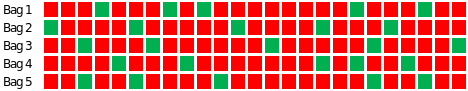
Figure 16.4: Bootstrap
Figure 16.5: Cross-validation
Training set (red) and testing set (green)
Example 16.3 (Simulated) We use simulated data set to demonstrate difference between estimated out-of-sample performance using random 20/80 split, 5-fold cross-validation and random split. We used \(x=-2,-1.99,-1.98,\ldots,2\) and \(y = 2+3x + \epsilon, ~ \epsilon \sim N(0,\sqrt{3})\). We simulated 35 datasets of size 100. For each of the simulated data sets, we fitted a linear model and estimated out-of-sample performance using three different approaches. Figure fig-test-error20 compares empirical distribution of errors estimated from 35 samples.
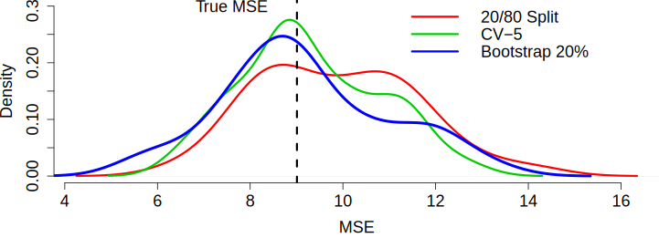
Figure 16.6: Empirical comparison of simple split, cross-validation, and bootstrap approaches to estimate out-of sample performance.
As we can see the estimated out-of-sample performance by a training set approach is of high variance. While, both cross-validation and bootstrap approaches lead to better estimates, they require model to be fitted 5 times, which can be computationally costly for a complex model. On the other hand, estimate from cross-validation is of lower variance and less bias compared to the bootstrap estimate. Thus, we should prefer cross-validation.
16.5 Small Sample Size
When sample size is small and it is not feasible to divide your data into training and validation data sets, an information criterion could be used to assess a model. We can think of information criterion as a metric that “approximates” out-os-sample performance of the model. Akaike’s Information Criterion (AIC) takes the form \[
\mathrm{AIC} = log(\sigma_k^2) + \dfrac{n+2k}{n}
\]\[
\hat{\sigma}_k^2 = \dfrac{SSE_k}{n}
\] Here \(k\) = number of coefficients in regression model, \(SSE_k\) = residual sum of square, \(\hat{\sigma}_k^2\) = MLE estimator for variance. We do not need to proceed sequentially, each model individually evaluated
AIC is derived using the Kullback-Leibler information number. It is a ruler to measure the similarity between the statistical model and the true distribution. \[
I(g ; f) = E_g\left(\log \left\{\dfrac{g(y)}{f(y)}\right\}\right) = \int_{-\infty}^{\infty}\log \left\{\dfrac{g(y)}{f(y)}\right\}g(y)dy.
\] Here - \(I(g ; f) > 0\) - \(I(g ; f) = 0 \iff g(u) = f(y)\) - \(f \rightarrow g\) as \(I(g ; f) \rightarrow 0\)
To estimate \(I(g ; f)\), we write \[
I(g ; f) = E_g\left(\log \left\{\dfrac{g(y)}{f(y)}\right\}\right) = E_g (\log g(y)) - E_g(\log f(y))
\] Only the second term is important in evaluating the statistical model \(f(y)\). Thus we need to estimate \(E_g(\log f(y))\). Given sample \(z_1,...,z_n\), and estimated parameters \(\hat{\theta}\) a naive estimate is \[
\hat{E}_g(\log f(y)) = \dfrac{1}{n} \sum_{i=1}^n \log f(z_i) = \dfrac{\ell(\hat{\theta})}{n}
\] where \(\ell(\hat{\theta})\) is the log-likelihood function for model under test.
this estimate is very biased
data used used twice: to get the MLE and second to estimate the integral
it will favor those model that overfit
Akaike showed that the bias is approximately \(k/n\) where \(k\) is the number of parameters \(\theta\). Therefore we use \[
\hat{E}_g(\log f(y)) = \dfrac{\ell(\hat{\theta})}{n} - \dfrac{k}{n}
\] Which leads to AIC \[
AIC = 2n \hat{E}_g(\log f(y)) = 2 \ell(\hat{\theta}) - 2k
\]
Akaike’s Information Criterion (AIC) \[
\mathrm{AIC} = \log(\sigma_k^2) + \dfrac{n+2k}{n}
\] Controls for balance between model complexity (\(k\)) and minimizing variance. The model selection process involve trying different \(k\), chose model with smallest AIC.
A slightly modified version designed for small samples is the bias corrected AIC (AICc). \[
\mathrm{AICc} = \log(\hat{\sigma}_k^2) + \dfrac{n+k}{n-k-2}
\] This criterion should be used for regression models with small samples
Yet, another variation designed for larger datasets is the Bayesian Information Criterion (BIC). \[
\mathrm{BIC} = \log(\hat{\sigma}_k^2) + \dfrac{k \log(n)}{n}
\] Is is the same as AIC but harsher penalty, this chooses simpler models. It works better for large samples when compared to AICc. The motivation fo BIC is from the posterior distribution over model space. Bayes rule lets you calculate the joint probability of parameter and models as \[
p(\theta,M\mid D) = \dfrac{p(D\mid \theta,M(p(M,\theta)}{p(D)},~~ p(M\mid D) = \int p(\theta,M\mid D)d\theta \approx n^{p/2}p(D\mid \hat \theta M)p(M).
\]
Consider a problem of predicting mortality rates given pollution and temperature measurements. Let’s plot the data.
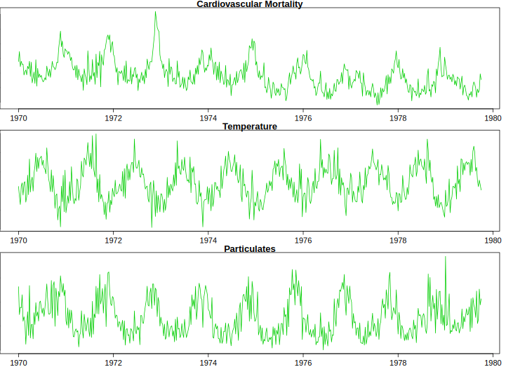
Figure 16.7: Time Series Plot
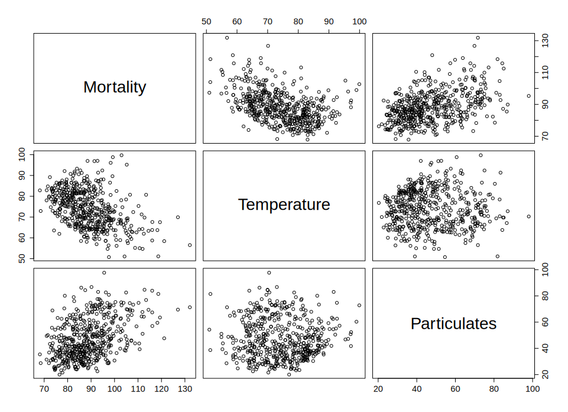
Figure 16.8: Scatter Plot
Regression Model 1, which just uses the trend: \(M_t = \beta_1 + \beta_2 t + w_t\). We fit by calling lm(formula = cmort ~ trend) to get the following coefficients
Estimate Std. Error t value
(Intercept) 3297.6062 276.3132 11.93
trend -1.6249 0.1399 -11.61
Regression Model 2 regresses to time (trend) and temperature: \(M_t = \beta_1 + \beta_2 t + \beta_t(T_t - T)+ w_t\). The R call is lm(formula = cmort ~ trend + temp)
Estimate Std. Error t value
(Intercept) 3125.75988 245.48233 12.73
trend -1.53785 0.12430 -12.37
temp -0.45792 0.03893 -11.76
Regression Model 3, uses trend, temperature and mortality: \(M_t = \beta_1 + \beta_2 t + \beta_3(T_t - T)+ \beta_4(T_t - T)^2 + w_t\). The R call is lm(formula = cmort ~ trend + temp + I(temp^2)
Regression Model 4 adds temperature squared: \(M_t = \beta_1 + \beta_2 t + \beta_3(T_t - T)+ \beta_4(T_t - T)^2 + \beta_5 P_t+ w_t\). The R call is lm(formula = cmort ~ trend + temp + I(temp^2) + part)
Estimate Std. Error t value
(Intercept) 2.831e+03 1.996e+02 14.19
trend -1.396e+00 1.010e-01 -13.82
temp -4.725e-01 3.162e-02 -14.94
temp2 2.259e-02 2.827e-03 7.99
part 2.554e-01 1.886e-02 13.54
To choose the model, we look at the information criterion
Model
\(k\)
SSE
df
MSE
\(R^2\)
AIC
BIC
1
2
40,020
506
79.0
.21
5.38
5.40
2
3
31,413
505
62.2
.38
5.14
5.17
3
4
27,985
504
55.5
.45
5.03
5.07
4
5
20,508
503
40.8
.60
4.72
4.77
\(R^2\) always decreases with number of covariates (that is what MLE does). Thus, cannot be used as a selection criteria. \(R^2\) for out-of-sample data is useful!
The message to take home on model selection
\(R^2\) is NOT a good metric for model selection
Value of likelihood function is NOT a god metric
are intuitive and work very well in practice (you should use those)
AIC is good for big \(n/df\), so it overfits in high dimensions
Should prefer AICc over AIC
BIC underfits for large \(n\)
Cross-validation is important, we will go over it later
16.6 Regularization
Regularization is a technique to incorporate some prior knowledge about parameters of the model into the estimation process. Consider an example when regularization allows us to solve a hard problem of filtering noisy traffic data.
::: {#exm-traffic} ## Traffic Consider traffic flow speed measured by an in-ground sensor installed on interstate I-55 near Chicago. Speed measurements are noisy and prone to have outliers. Figure fig-speed-profile shows speed measured data, averaged over five minute intervals on one of the weekdays.
Figure 16.9: Speed profile over 24 hour period on I-55, on October 22, 2013
Speed measurements are noisy and prone to have outliers. There are two sources of noise. The first is the measurement noise, caused by inhalant nature of the sensor’s hardware. The second source is due to sampling error, vehicles observed on a specific lane where senor installed might not represent well traffic in other lanes.
Trend filtering, which is a variation of a well-know Hodrick-Prescott filter. In this case, the trend estimate is the minimizer of the weighted sum objective function \[
(1/2) \sum_{t=1}^{n}(y_t - x_t)^2 + \lambda \sum_{t=1}^{n-1}|x_{t-1} - 2x_t + x_{t+1}|,
\]
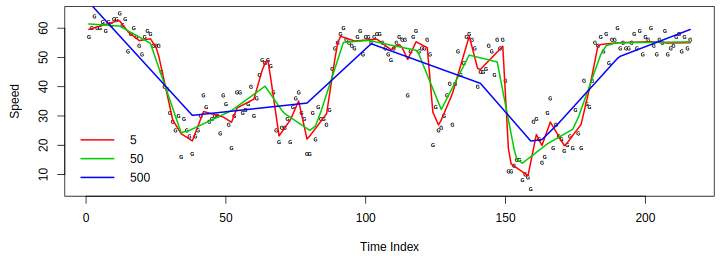
Trend filter for different penalty
Trend filtering with optimal penalty
Trend Filtering for Traffic Speed Data
16.7 Ridge Regression
Gauss invented the concept of least squares and developed algorithms to solve the the optimization problem \[
\underset{\beta}{\mathrm{minimize}}\quad ||y- X\beta||_2^2
\] where \(\beta = (\beta_1 , \ldots , \beta_p )\), we can use linear algebra algorithms, the solution given by \[
\hat{\beta} = ( X^T X )^{-1} X^T y
\] This can be numerically unstable when \(X^T X\) is ill-conditioned, and happens when \(p\) is large. Ridge regression addresses this problem by adding an extra term to the \(X^TX\) matrix \[
\hat{\beta}_{\text{ridge}} = ( X^T X + \lambda I )^{-1} X^T y.
\] The corresponding optimization problem is \[
\underset{\beta}{\mathrm{minimize}}\quad ||y- X\beta||_2^2 + \lambda||\beta||_2^2.
\] An alternative formulation is We can think of the constrain is of a budget on the size of \(\beta\).
The we choose \(\lambda\) over a regularisation path. The penalty in ridge regression forces coefficients \(\beta\) to be close to 0. Penalty is large for large values and very small for small ones. Tuning parameter \(\lambda\) controls trade-off between how well model fits the data and how small \(\beta\)s are. Different values of \(\lambda\) will lead to different models. We select \(\lambda\) using cross validation.
Example 16.4 (Shrinkage) Consider a simulated data with \(n=50\), \(p=30\), and \(\sigma^2=1\). The true model is linear with \(10\) large coefficients between \(0.5\) and \(1\).
Our approximators \(\hat f_{\beta}\) is a linear regression. We can empirically calculate the bias by calculating the empirical squared loss \(1/n||y -\hat y||_2^2\) and variance can be empirically calculated as \(1/n\sum (\bar{\hat{y}} - \hat y_i)\)
Bias squared \(\mathrm{Bias}(\hat{y})^2=0.006\) and variance \(\Var{\hat{y}} =0.627\). Thus, the prediction error = \(1 + 0.006 + 0.627 = 1.633\)
We’ll do better by shrinking the coefficients to reduce the variance. Let’s estimate, how big a gain will we get with Ridge?
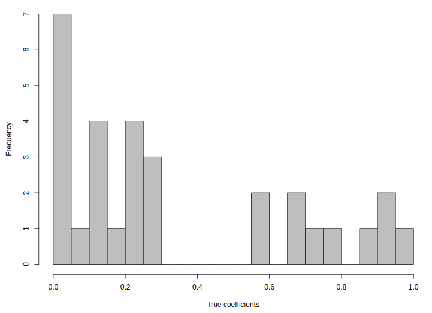
True model coefficients
Now we see the accuracy of the model as a function of \(\lambda\)
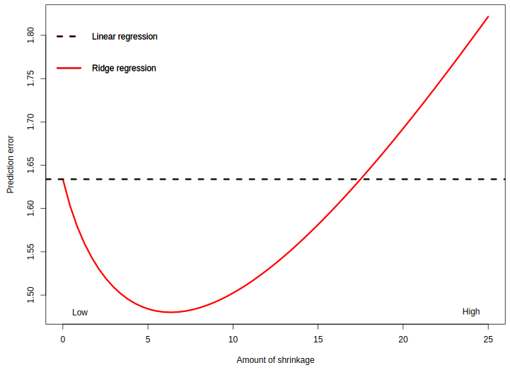
Prediction error as a function of \(\lambda\)
Ridge Regression At best: Bias squared \(=0.077\) and variance \(=0.402\).
Prediction error = \(1 + 0.077 + 0.403 = 1.48\)
Ridge
The additional term \(\lambda||\beta||_2^2\) in the optimization problem is called the regularization term. There are several ways to regularize an optimization problem. All of those techniques were developed in the middle of last century and were applied to solve problems of fitting physics models into observed data, those frequently arise in physics and engineering applications. Here are a few examples of such regularization techniques.
Morozov regularization\[
\underset{x \in \mathbb{R^n}}{\mathrm{minimize}}\quad ||\beta||_l~~~~ \mbox{s.t.}~~ ||y - X\beta||_2^2 \le \tau
\] Here \(\tau\) reflects the so called noise level, i.e. an estimate of the error which is made during the measurement of \(b\).
Tikhonov regularization\[
\underset{\beta\in \mathbb{R^n}}{\mathrm{minimize}}\quad ||y - X\beta||_2^2 + \lambda||\beta||_l
\] - Tikhonov regularization with \(l=1\) is lasso - Tikhonov regularization with \(l=2\) is ridge regression - lasso + ridge = elastic net
16.8\(\ell_1\) Regularization (LASSO)
The Least Absolute Shrinkage and Selection Operator (LASSO) uses \(\ell_1\) norm penalty and in case of linear regression leads to the following optimization problem \[
\underset{\beta}{\mathrm{minimize}}\quad ||y- X\beta||_2^2 + \lambda||\beta||_1
\]
In one dimensional case solves the following optimization problem \[
\underset{\beta}{\mathrm{minimize}}\quad \frac{1}{2} (y-\beta)^2 + \lambda | \beta |
\] The solution is given by the soft-thresholding operator defined by \[
\hat{\beta} = \mathrm{soft} (y; \lambda) = ( y - \lambda ~\mathrm{sgn}(y) )_+.
\] Here sgn is the sign function and \(( x )_+ = \max (x,0)\). To demonstrate how this solution is derived, we can define a slack variable \(z = | \beta |\) and solve the joint constrained optimisation problem which is differentiable.
Graphically, the soft-thresholding operator is
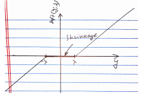
Soft-threshold operator.
LASSO has a nice feature that it forces some of the \(\hat{\beta}\)’s to zero. It is an automatic variable selection! Finding optimal solution is computationally fast, it is a convex optimisation problem, though, it is non-smooth. As in ridge regression, we still have to pick \(\lambda\) via cross-validation. Visually the process can be represented using regularization path graph, as in the following example Example: We model prostate cancer using LASSO
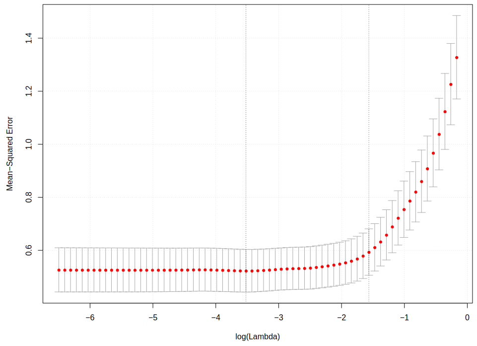
MSE.
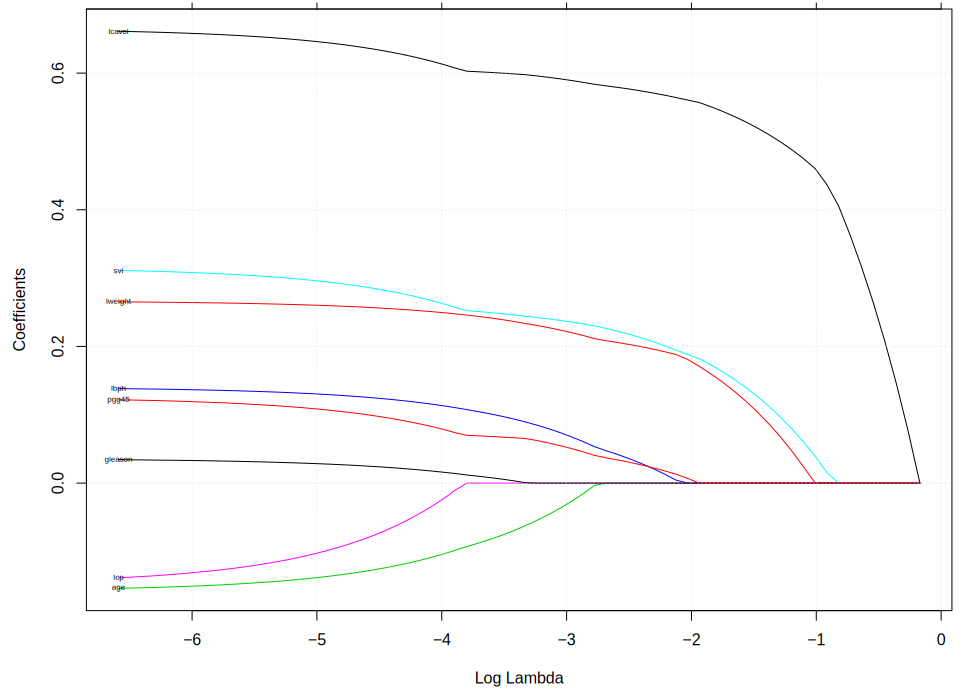
Path
MSE and Regularization path for Prostate Cancer data using LASSO
Now with ridge regression
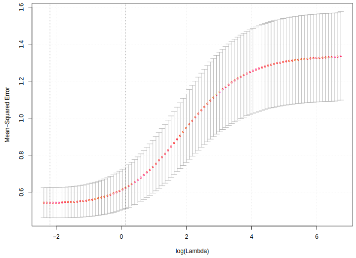
MSE
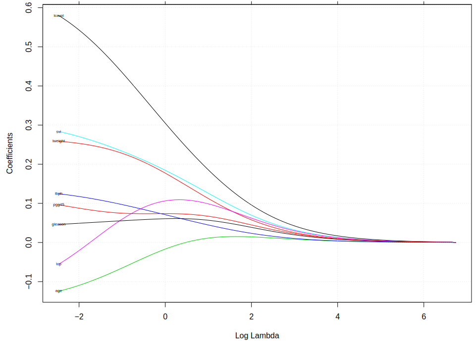
Path
MSE and Regularization path for Prostate Cancer data using Ridge
Example 16.5 (Horse race prediction using logistic regression) We use the run.csv data from Kaggle (https://www.kaggle.com/gdaley/hkracing). Thhis dataset contains the condition of horse races in Hong Kong, including race course, distance, track condition and dividends paid. We want to use individual variables to predict the chance of winning of a horse. For the simplicity of computation, we only consider horses with id \(\leq 500\), and train the model with \(\ell_1\)-regularized logistic regression.
And we include lengths_behind, horse_age, horse_country, horse_type, horse_rating, horse_gear, declared_weight, actual_weight, draw, win_odds, place_odds as predicting variables in our model.
Since most of the variables, such as country, gear, type, are categorical, after spanning them into binary indictors, we have more than 800 columns in the design matrix.
We try two logistic regression model. The first one includes win_odds given by the gambling company. The second one does not include the win_odds and we use win_odds to test the power of our model. We tune both models with a 10-fold cross-validation to find the best penalty parameter \(\lambda\).
In this model, we fit the logistic regression with full dataset. The best \(\lambda\) we find is \(5.699782e-06\).
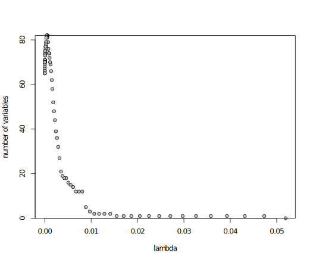
Number of variables vs lambda
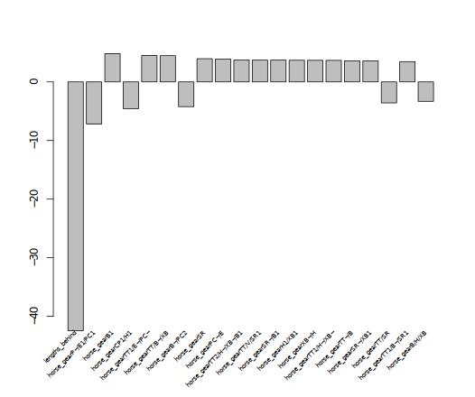
Coefficient Ranking
Logistic regression for full data
In this model, we randomly partition the dataset into training(70%) and testing(30%) parts. We fit the logistic regression with training dataset. The best \(\lambda\) we find is \(4.792637e-06\).
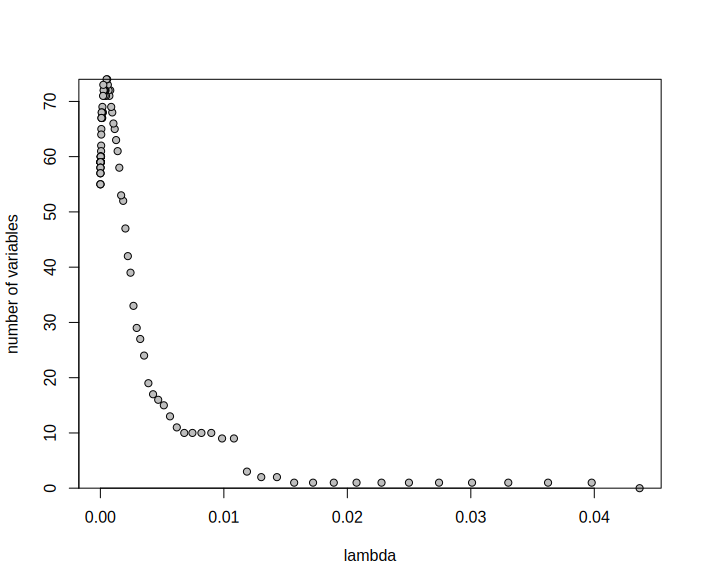
Number of variables vs lambda
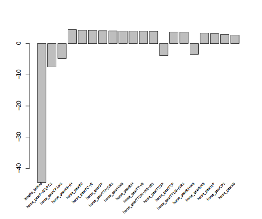
Coefficient Ranking
Logistic regression for test data
The out-of-sample mean squared error for win_odds is 0.0668.
Elastic Net combines Ridge and Lasso and chooses coefficients \(\beta_1,\ldots,\beta_p\) for the input variables by minimizing the sum-of-squared residuals plus a penalty of the form \[
\lambda||\beta||_1 + \alpha||\beta||_2^2.
\]
16.9 Bayesian Regularization
From Bayesian perspective regularization is nothing but incorporation of prior information into the model. Remember, that a Bayesian model is specified by likelihood and prior distributions. Bayesian regularization methods include the Bayesian bridge, horseshoe regularization, Bayesian lasso, Bayesian elastic net, spike-and-slab lasso, and global-local shrinkage priors. Bayesian \(l_0\) regularization is an attractive solution for high dimensional variable selection as it directly penalizes the number of predictors. The caveat is the need to search over all possible model combinations, as a full solution requires enumeration over all possible models which is NP-hard.
In Bayesian approach, regularization requires the specification of a loss, denoted by \(l\left(\beta\right)\) and a penalty function, denoted by \(\phi_{\lambda}(\beta)\), where \(\lambda\) is a global regularization parameter. From a Bayesian perspective, \(l\left(\beta\right)\) and \(\phi_{\lambda}(\beta)\) correspond to the negative logarithms of the likelihood and prior distribution, respectively. Regularization leads to an maximum a posteriori (MAP) optimization problem of the form \[
\underset{\beta \in R^p}{\mathrm{minimize}\quad}
l\left(\beta\right) + \phi_{\lambda}(\beta) \; .
\] Taking a probabilistic approach leads to a Bayesian hierarchical model \[
p(y \mid \beta) \propto \exp\{-l(\beta)\} \; , \quad p(\beta) \propto \exp\{ -\phi_{\lambda}(\beta) \} \ .
\] The solution to the minimization problem estimated by regularization corresponds to the posterior mode, \(\hat{\beta} = \mathrm{ arg \; max}_\beta \; p( \beta|y)\), where \(p(\beta|y)\) denotes the posterior distribution. Consider a normal mean problem with \[
\label{eqn:linreg}
y = \theta+ e \ , \ \ \text{where } e \sim N(0, \sigma^2),~-\infty \le \theta \le \infty \ .
\] What prior \(p(\theta)\) should we place on \(\theta\) to be able to separate the “signal” \(\theta\) from “noise” \(e\), when we know that there is a good chance that \(\theta\) is sparse (i.e. equal to zero). In the multivariate case we have \(y_i = \theta_i + e_i\) and sparseness is measured by the number of zeros in \(\theta = (\theta_1\ldots,\theta_p)\). The Bayesan Lasso assumes double exponential (a.k.a Laplace) prior distribution where \[
p(\theta_i \mid b) = 0.5b\exp(-|\theta|/b).
\] We use Bayes rule to calculate the posterior as a product of Normal likelihood and Laplace prior \[
\log p(\theta \mid y, b) \propto ||y-\theta||_2^2 + \dfrac{2\sigma^2}{b}||\theta||_1.
\] For fixed \(\sigma^2\) and \(b>0\) the posterior mode is equivalent to the Lasso estimate with \(\lambda = 2\sigma^2/b\). Large variance \(b\) of the prior is equivalent to the small penalty weight \(\lambda\) in the Lasso objective function.
The Laplace distribution can be represented as scale mixture of Normal distribution(Andrews and Mallows 1974)\[
\begin{aligned}
\theta_i \mid \sigma^2,\tau \sim &N(0,\tau^2\sigma^2)\\
\tau^2 \mid \alpha \sim &\exp (\alpha^2/2)\\
\sigma^2 \sim & \pi(\sigma^2).\end{aligned}
\] We can show equivalence by integrating out \(\tau\)\[
p(\theta_i\mid \sigma^2,\alpha) = \int_{0}^{\infty} \dfrac{1}{\sqrt{2\pi \tau}}\exp\left(-\dfrac{\theta_i^2}{2\sigma^2\tau}\right)\dfrac{\alpha^2}{2}\exp\left(-\dfrac{\alpha^2\tau}{2}\right)d\tau = \dfrac{\alpha}{2\sigma}\exp(-\alpha/\sigma|\theta_i|).
\] Thus it is a Laplace distribution with location 0 and scale \(\alpha/\sigma\). Representation of Laplace prior is a scale Normal mixture allows us to apply an efficient numerical algorithm for computing samples from the posterior distribution. This algorithms is called a Gibbs sample and it iteratively samples from \(\theta \mid a,y\) and \(b\mid \theta,y\) to estimate joint distribution over \((\hat \theta, \hat b)\). Thus, we so not need to apply cross-validation to find optimal value of \(b\), the Bayesian algorithm does it “automatically”. We will discuss Gibbs algorithm later in the book.
When prior is Normal \(\theta_i \sim N(0,\sigma_{\theta}^2)\), the posterior mode is equivalent to the ridge estimate. The relation between variance of the prior and the penalty weight in ridge regression is inverse proportional \(\lambda\propto 1/\sigma_{\theta}^2\).
16.10 Spike-and-Slab Prior
Our Bayesian formulation of allows to specify a wide range of range of regularized formulations for a regression problem. In this section we consider a Bayesian model for variable selection. Consider a linear regression problem \[
y = \beta_1x_1+\ldots+\beta_px_p + e \ , \ \ \text{where } e \sim N(0, \sigma^2),~-\infty \le \beta_i \le \infty \ .
\] We would like to solve the problem of variable selections, i.e. identify which input variables \(x_i\) to be used in our model. The gold standard for Bayesian variable selection are spike-and-slab priors, or Bernoulli-Gaussian mixtures. Whilst spike-and-slab priors provide full model uncertainty quantification, they can be hard to scale to very high dimensional problems and can have poor sparsity properties. On the other hand, techniques like proximal algorithms can solve non-convex optimization problems which are fast and scalable, although they generally don’t provide a full assessment of model uncertainty.
To perform a model selection, we would like to specify a prior distribution \(p\left(\beta\right)\), which imposes a sparsity assumption on \(\beta\), where only a small portion of all \(\beta_i\)’s are non-zero. In other words, \(\|\beta\|_0 = k \ll p\), where \(\|\beta\|_0 \defeq \#\{i : \beta_i\neq0\}\), the cardinality of the support of \(\beta\), also known as the \(l_0\) (pseudo)norm of \(\beta\). A multivariate Gaussian prior (\(l_2\) norm) leads to poor sparsity properties in this situation. Sparsity-inducing prior distributions for \(\beta\) can be constructed to impose sparsity include the double exponential (lasso).
Under spike-and-slab, each \(\beta_i\) exchangeably follows a mixture prior consisting of \(\delta_0\), a point mass at \(0\), and a Gaussian distribution centered at zero. Hence we write,
\[
\label{eqn:ss}
\beta_i | \theta, \sigma_\beta^2 \sim (1-\theta)\delta_0 + \theta N\left(0, \sigma_\beta^2\right) \ .
\] Here \(\theta\in \left(0, 1\right)\) controls the overall sparsity in \(\beta\) and \(\sigma_\beta^2\) accommodates non-zero signals. This family is termed as the Bernoulli-Gaussian mixture model in the signal processing community.
A useful re-parameterization, the parameters \(\beta\) is given by two independent random variable vectors \(\gamma = \left(\gamma_1, \ldots, \gamma_p\right)'\) and \(\alpha = \left(\alpha_1, \ldots, \alpha_p\right)'\) such that \(\beta_i = \gamma_i\alpha_i\), with probabilistic structure \[
\label{eq:bg}
\begin{array}{rcl}
\gamma_i\mid\theta & \sim & \text{Bernoulli}(\theta) \ ;
\\
\alpha_i \mid \sigma_\beta^2 &\sim & N\left(0, \sigma_\beta^2\right) \ .
\\
\end{array}
\] Since \(\gamma_i\) and \(\alpha_i\) are independent, the joint prior density becomes \[
p\left(\gamma_i, \alpha_i \mid \theta, \sigma_\beta^2\right) =
\theta^{\gamma_i}\left(1-\theta\right)^{1-\gamma_i}\frac{1}{\sqrt{2\pi}\sigma_\beta}\exp\left\{-\frac{\alpha_i^2}{2\sigma_\beta^2}\right\}
\ , \ \ \ \text{for } 1\leq i\leq p \ .
\] The indicator \(\gamma_i\in \{0, 1\}\) can be viewed as a dummy variable to indicate whether \(\beta_i\) is included in the model.
Let \(S = \{i: \gamma_i = 1\} \subseteq \{1, \ldots, p\}\) be the “active set" of \(\gamma\), and \(\|\gamma\|_0 = \sum\limits_{i = 1}^p\gamma_i\) be its cardinality. The joint prior on the vector \(\{\gamma, \alpha\}\) then factorizes as \[
\begin{array}{rcl}
p\left(\gamma, \alpha \mid \theta, \sigma_\beta^2\right) & = & \prod\limits_{i = 1}^p p\left(\alpha_i, \gamma_i \mid \theta, \sigma_\beta^2\right) \\
& = &
\theta^{\|\gamma\|_0}
\left(1-\theta\right)^{p - \|\gamma\|_0}
\left(2\pi\sigma_\beta^2\right)^{-\frac p2}\exp\left\{-\frac1{2\sigma_\beta^2}\sum\limits_{i = 1}^p\alpha_i^2\right\} \ .
\end{array}
\]
Let \(X_\gamma \defeq \left[X_i\right]_{i \in S}\) be the set of “active explanatory variables" and \(\alpha_\gamma \defeq \left(\alpha_i\right)'_{i \in S}\) be their corresponding coefficients. We can write \(X\beta = X_\gamma \alpha_\gamma\). The likelihood can be expressed in terms of \(\gamma\), \(\alpha\) as \[
p\left(y \mid \gamma, \alpha, \theta, \sigma_e^2\right)
=
\left(2\pi\sigma_e^2\right)^{-\frac n2}
\exp\left\{
-\frac1{2\sigma_e^2}\left\|y - X_\gamma \alpha_\gamma\right\|_2^2
\right\} \ .
\]
Under this re-parameterization by \(\left\{\gamma, \alpha\right\}\), the posterior is given by
\[
\begin{array}{rcl}
p\left(\gamma, \alpha \mid \theta, \sigma_\beta^2, \sigma_e^2, y\right) & \propto &
p\left(\gamma, \alpha \mid \theta, \sigma_\beta^2\right)
p\left(y \mid \gamma, \alpha, \theta, \sigma_e^2\right)\\
& \propto &
\exp\left\{-\frac1{2\sigma_e^2}\left\|y - X_\gamma \alpha_\gamma\right\|_2^2
-\frac1{2\sigma_\beta^2}\left\|\alpha\right\|_2^2
-\log\left(\frac{1-\theta}{\theta}\right)
\left\|\gamma\right\|_0
\right\} \ .
\end{array}
\] Our goal then is to find the regularized maximum a posterior (MAP) estimator \[
\arg\max\limits_{\gamma, \alpha}p\left(\gamma, \alpha \mid \theta, \sigma_\beta^2, \sigma_e^2, y \right) \ .
\] By construction, the \(\gamma\)\(\in\left\{0, 1\right\}^p\) will directly perform variable selection. Spike-and-slab priors, on the other hand, will sample the full posterior and calculate the posterior probability of variable inclusion. Finding the MAP estimator is equivalent to minimizing over \(\left\{\gamma, \alpha\right\}\) the regularized least squares objective function
The first term is essentially the least squares loss function.
The second term looks like a ridge regression penalty and has connection with the signal-to-noise ratio (SNR) \(\sigma_\beta^2/\sigma_e^2\). Smaller SNR will be more likely to shrink the estimates towards \(0\). If \(\sigma_\beta^2 \gg \sigma_e^2\), the prior uncertainty on the size of non-zero coefficients is much larger than the noise level, that is, the SNR is sufficiently large, this term can be ignored. This is a common assumption in spike-and-slab framework in that people usually want \(\sigma_\beta \to \infty\) or to be “sufficiently large" in order to avoid imposing harsh shrinkage to non-zero signals.
If we further assume that \(\theta < \frac12\), meaning that the coefficients are known to be sparse a priori, then \(\log\left(\left(1-\theta\right) / \theta\right) > 0\), and the third term can be seen as an \(l_0\) regularization.
Therefore, our Bayesian objective inference is connected to \(l_0\)-regularized least squares, which we summarize in the following proposition.
(Spike-and-slab MAP & \(l_0\) regularization)
For some \(\lambda > 0\), assuming \(\theta < \frac12\), \(\sigma_\beta^2 \gg \sigma_e^2\), the Bayesian MAP estimate defined by ([obj:map]) is equivalent to the \(l_0\) regularized least squares objective, for some \(\lambda > 0\), \[
\label{obj:l0}
\min\limits_{\beta}
\frac12\left\|y - X\beta\right\|_2^2
+ \lambda
\left\|\beta\right\|_0 \ .
\]
First, assuming that \[
\theta < \frac12, \ \ \ \sigma_\beta^2 \gg \sigma_e^2, \ \ \ \frac{\sigma_e^2}{\sigma_\beta^2}\left\|\alpha\right\|_2^2 \to 0 \ ,
\] gives us an objective function of the form \[
\min\limits_{\gamma, \alpha}
\label{obj:vs}
\frac12 \left\|y - X_\gamma \alpha_\gamma\right\|_2^2
+ \lambda
\left\|\gamma\right\|_0, \ \ \ \ \text{where } \lambda \defeq \sigma_e^2\log\left(\left(1-\theta\right) / \theta\right) > 0 \ .
\]
Equation ([obj:vs]) can be seen as a variable selection version of equation ([obj:l0]). The interesting fact is that ([obj:l0]) and ([obj:vs]) are equivalent. To show this, we need only to check that the optimal solution to ([obj:l0]) corresponds to a feasible solution to ([obj:vs]) and vice versa. This is explained as follows.
On the one hand, assuming \(\hat\beta\) is an optimal solution to ([obj:l0]), then we can correspondingly define \(\hat\gamma_i \defeq I\left\{\hat\beta_i \neq 0\right\}\), \(\hat\alpha_i \defeq \hat\beta_i\), such that \(\left\{\hat\gamma, \hat\alpha\right\}\) is feasible to ([obj:vs]) and gives the same objective value as \(\hat\beta\) gives ([obj:l0]).
On the other hand, assuming \(\left\{\hat\gamma, \hat\alpha\right\}\) is optimal to ([obj:vs]), implies that we must have all of the elements in \(\hat\alpha_\gamma\) should be non-zero, otherwise a new \(\tilde\gamma_i \defeq I\left\{\hat\alpha_i \neq 0\right\}\) will give a lower objective value of ([obj:vs]). As a result, if we define \(\hat\beta_i \defeq \hat\gamma_i\hat\alpha_i\), \(\hat\beta\) will be feasible to ([obj:l0]) and gives the same objective value as \(\left\{\hat\gamma, \hat\alpha\right\}\) gives ([obj:vs]).
16.11 Horseshoe Prior
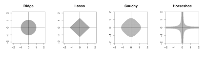
The sparse normal means problem is concerned with inference for the parameter vector \(\theta = ( \theta_1 , \ldots , \theta_p )\) where we observe data \(y_i = \theta_i + \epsilon_i\) where the level of sparsity might be unknown. From both a theoretical and empirical viewpoint, regularized estimators have won the day. This still leaves open the question of how does specify a penalty, denoted by \(\pi_{HS}\), (a.k.a. log-prior, \(- \log p_{HS}\))? Lasso simply uses an \(L^1\)-norm, \(\sum_{i=1}^K | \theta_i |\), as opposed to the horseshoe prior which (essentially) uses the penalty \[
\pi_{HS} ( \theta_i | \tau ) = - \log p_{HS} ( \theta_i | \tau ) = - \log \log \left ( 1 + \frac{2 \tau^2}{\theta_i^2} \right ) .
\] The motivation for the horseshoe penalty arises from the analysis of the prior mass and influence on the posterior in both the tail and behaviour at the origin. The latter is the key determinate of the sparsity properties of the estimator.
From a historical perspective, James-Stein (a.k.a \(L^2\)-regularisation)(Stein 1964) is only a global shrinkage rule–in the sense that there are no local parameters to learn about sparsity. A simple sparsity example shows the issue with \(L^2\)-regularisation. Consider the sparse \(r\)-spike shows the problem with focusing solely on rules with the same shrinkage weight (albeit benefiting from pooling of information).
Let the true parameter value be \(\theta_p = \left ( \sqrt{d/p} , \ldots , \sqrt{d/p} , 0 , \ldots , 0 \right )\). James-Stein is equivalent to the model \[
y_i = \theta_i + \epsilon_i \; \mathrm{ and} \; \theta_i \sim \mathcal{N} \left ( 0 , \tau^2 \right )
\] This dominates the plain MLE but loses admissibility! This is due to the fact that a “plug-in” estimate of global shrinkage \(\hat{\tau}\) is used. Tiao and Tan’s original “closed-form” analysis is particularly relevant here. They point out that the mode of \(p(\tau^2|y)\) is zero exactly when the shrinkage weight turns negative (their condition 6.6). From a risk perspective \(E \Vert \hat{\theta}^{JS} - \theta \Vert \leq p , \forall \theta\) showing the inadmissibility of the MLE. At origin the risk is \(2\), but!\[
\frac{p \Vert \theta \Vert^2}{p + \Vert \theta \Vert^2} \leq R \left ( \hat{\theta}^{JS} , \theta_p \right ) \leq
2 + \frac{p \Vert \theta \Vert^2}{ d + \Vert \theta \Vert^2}.
\] This implies that \(R \left ( \hat{\theta}^{JS} , \theta_p \right ) \geq (p/2)\). Hence, simple thresholding rule beats James-Stein this with a risk given by \(\sqrt{\log p }\). This simple example, shows that the choice of penalty should not be taken for granted as different estimators will have different risk profiles.
16.12 Bayesian Inference
Consider a linear regression without bias term \[
f(x) = x^Tw + \epsilon,~~~\epsilon \sim N(0,\sigma_e).
\] We put a zero mean Gaussian prior on the model parameters \[
\beta \sim N(0,\Sigma).
\] Bayesian inference is to calculate posterior given the data \[
p(w\mid y,X) = \dfrac{p(y\mid X,w)p(w)}{p(y\mid X)}.
\] Product of two Gaussian density functions lead to another Gaussian \[
\begin{aligned}
p(w\mid y,X) & \propto \exp\left(-\dfrac{1}{2\sigma_e^2}(y-\beta^TX)^T(y-\beta^TX)\right)\exp\left(-\dfrac{1}{2}\beta^T\Sigma^{-1}\beta\right)\\
& \propto \exp\left(-\dfrac{1}{2}(\beta - \bar\beta)^T\left(\dfrac{1}{\sigma_e^2XX^T + \Sigma^{-1}}\right)(\beta-\bar\beta)\right)
\end{aligned}
\]
Thus, the posterior is \[
\beta\mid X,y \sim N(\bar\beta,A^{-1}),
\] where \(A = \left(\sigma_e^{-2}XX^T + \Sigma\right)\), and \(\bar\beta = \sigma_e^{-2}A^{-1}Xy\).
16.13 Posterior
Consider a model with \(p = 1\)\[
y = \beta_0 + \beta_1 x + \epsilon, ~~ \beta_i \sim N(0,1),~~~\sigma_e = 1
\] Let’s plot a sample from the prior set of functions
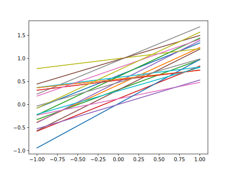
Sample from prior distribution over possible linear models
Now, say we observed two points \((1,1)\) and \((2,2)\), we can calculate the posterior \(\beta \mid X,y \sim N(0.833, 0.166)\)
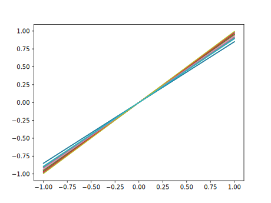
Sample from posterior distribution over possible linear models
Why our posterior mean is not 1?
16.14 Bayesian Model Selection
When analyzing data, we deal with three types of quantities
\(X\) = observed variables
\(Y\) = hidden variable
\(\theta\) = parameters of the model that describes the relation between \(X\) and \(Y\).
A probabilistic models of interest are the joint probability distribution \(p(D,\theta)\) (called a generative model) and \(P(Y,\theta \mid X)\) (discriminative model). Discriminative models are easier to build and are more frequently used in practice. Generative model requires modeling a distribution over the set of observed variables, which makes our model more complicated. Text analysis provides an illustrative example. The task of identifying a topic of an article can be solved using discriminative distribution. The problem of generating a new article requires generative model.
While performing data analysis using learning algorithms, we perform two tasks, namely training and inference which are summarized in the table below
Step
Given
Hidden
What to find
Training
\(D = (X,Y) = \{x_i,y_i\}_{i=1}^n\)
\(\theta\)
\(p(\theta \mid D)\)
Prediction
\(x_{\text{new}}\)
\(y_{\text{new}}\)
\(p(y_{\text{new}} \mid x_{\text{new}}, D)\)
The training can be performed via the Bayes rule \[
p(\theta \mid D) = \dfrac{p(Y \mid \theta,X)p(\theta)}{\int p(Y \mid \theta,X)p(\theta)d\theta}.
\] Now to perform the second step (prediction), we calculate \[
p(y_{\text{new}} \mid x_{\text{new}}, D) = \int p(y_{\text{new}} \mid x_{\text{new}},\theta)p(\theta \mid D)d\theta
\] Thus, full Bayesian inference requires calculating two integrals, which might be difficult. We mentioned earlier that MAP allows us to avoid those calculations by approximating the posterior with \[
p(\theta \mid D) \approx \delta(\theta_{\text{MAP}}),~~\theta_{\text{MAP}} \in \argmax_{\theta}p(\theta \mid D)
\] To calculate \(\theta_{\text{MAP}}\), we do not need to know the normalizing constant for calculating posterior, since the solution of optimization problem does not depend on this constant. Further, the second integral for inference becomes degenerate and get approximated by \[
p(y_{\text{new}} \mid x_{\text{new}}, D) = \int p(y_{\text{new}} \mid x_{\text{new}},\theta)p(\theta \mid D)d\theta \approx p(y_{\text{new}} \mid x_{\text{new}},\theta_{\text{MAP}}).
\]
Now we consider a case, when we have several candidate density functions for performing the prediction \[
p_1(Y,\theta \mid X), ~~p_2(Y,\theta \mid X),\ldots
\] How do we choose the better model? We can choose the model with highest evidence value (due to David MacKay) \[
j = \argmax_j p_j(Y \mid X) = \argmax_j \int p_j(Y \mid X,\theta)p(\theta)d\theta.
\] Note, formally instead of \(p(\theta)\) we need to write \(p(\theta \mid X)\), however since \(\theta\) does not depend on \(X\) we omit it.
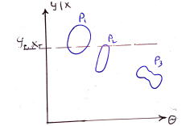
Model Selection
Can you think of how the prior \(p(\theta)\), posterior \(p(\theta \mid D)\) and the evidence \(p(Y \mid X)\) distributions will look like? Which model is the best? Which model will have the highest \(\theta_{\text{MAP}}\)?
Example 16.6 (Racial discrimination) Say we want to analyze racial discrimination by the US courts. We have three variables:
Murderer: \(m \in {0,1}\) (black/white)
Victim: \(v \in \{0,1\}\) (black/white)
Verdict: \(d \in \{0,1\}\) (prison/death penalty)
Say we have the data
m
v
d
n
0
0
0
132
0
0
1
19
0
1
0
9
0
1
1
0
1
0
0
52
1
0
1
11
1
1
0
97
1
1
1
6
We would like to establish a causal relations between the race and verdict variables. For this, we consider several models
We calculate which model describes data the best, we calculate the evidences. We need to describe the discriminative model \[
p(Y ,\theta \mid X) = p(Y \mid X,\theta)p(\theta \mid X)
\] Here \(X\) is the number of cases, and \(Y\) is the number of death penalties. We use uninformative prior \(\theta \sim U[0,1]\). To specify the likelihood, we use Binomial distribution \[
Y \mid X,\theta \sim B(X,\theta),~~B(Y \mid X,\theta) = C_Y^Xp^Y(1-\theta)^{X-Y}
\] We assume \(p(\theta)\sim Uniform\). Now lets calculate the evidence \[
p(Y, \theta \mid X) = \int p(Y \mid X,\theta)p(\theta)d\theta
\] for each of the four models
The last model is too complex, it can explain any relations in the data and this, has the lowest evidence score! However, if we are to use ML estimates, the fourth model will have the highest likelihood. Bayesian approach allows to avoid over-fitting! You can also see that this data set contains the Simpson’s paradox. Check it! A related problem is Bertrand’s gold box problem.
Andrews, D. F., and C. L. Mallows. 1974. “Scale Mixtures of Normal Distributions.”Journal of the Royal Statistical Society. Series B (Methodological) 36 (1): 99–102. https://www.jstor.org/stable/2984774.
Efron, Bradley, and Carl Morris. 1977. “Stein’s Paradox in Statistics.”Scientific American 236 (5): 119–27.
Stein, Charles. 1964. “Inadmissibility of the Usual Estimator for the Variance of a Normal Distribution with Unknown Mean.”Annals of the Institute of Statistical Mathematics 16 (1): 155–60.